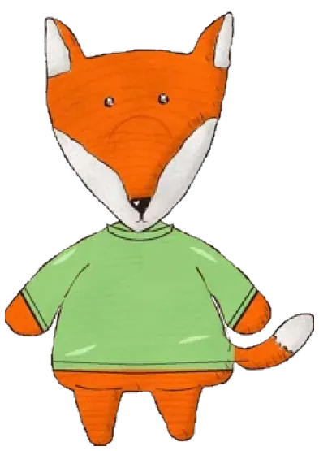
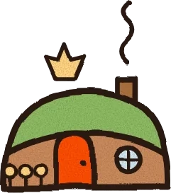

We can't show the latest numbers right now. Please try again in a little while.

Primary Virtual School
This school year our teachers have taught
minutes of live lessons
See the Virtual School
Freddie's Friends
Right now
brothers and sisters are part of Freddie's Friends
See Freddie's FriendsWhy we are needed
-
Around 2,000
children are diagnosed with cancer in the UK every year. That is more than five every day.
Source: Cancer Research UK, 2019 and 2021 to 2022
-
More than 4,000
a year when young people aged 15 to 24 are included.
Source: CCLG: The Children & Young People's Cancer Association
-
9% higher
Recorded rates of childhood cancer have risen by around 9% since the early 2000s.
Source: Cancer Research UK
-
More than 8 in 10
children now survive for five years or more, so keeping their learning going matters.
Source: Cancer Research UK, 2012 to 2016
Treatment can mean long spells away from the classroom, and brothers and sisters feel it too. That is where we come in.
Children and young people registering with BeMoreFab each school year
Education
When cancer keeps a child out of school, we keep their learning going: live lessons in our Primary Virtual School, tuition close to home, and secondary learning with our partners.
Children learning with us, by type of support
Over the past 12 months
- children supported with their learning
- children started learning with us
Primary Virtual School
Live lessons with qualified primary teachers, every school day. Wellbeing and confidence come first, and we work alongside each child's own school.
Minutes of live lessons taught each month this school year
This school year
- hours of live teaching
- live lessons taught
- hours or more of wellbeing activities. At least a third of our teaching time is for wellbeing.
Freddie's Friends
Cancer changes life for brothers and sisters too. Freddie's Friends is for them: a gift chosen for each child, and treats through the year.
Gifts and treats sent each month
Over the past 12 months
- gifts and treats sent to brothers and sisters

Where the children we support live
We support families right across the UK. To protect children's privacy we round these figures to the nearest 5, and we never show a number smaller than 5.
Children and young people we are supporting, by UK region
What changes for children
We are building this part now. It will show what children and families tell us changes for them: confidence, learning and getting back to school.
About these numbers

Where we stop
These are totals only. Nothing here can identify a child or a family. Regional figures are rounded to the nearest 5 and anything under 5 is shown as "Fewer than 5".
- Children and young people we are supporting
- Children and young people with at least one kind of support from us open today.
- Learning with us
- Children and young people with education support from us open today.
- Minutes of live lessons
- Minutes of live online lessons taught since 1 September, counting each lesson once.
- Freddie's Friends
- Brothers and sisters of a child with cancer who are part of Freddie's Friends today.
- How often it updates
- Every weekday, from BeMoreFab's own records. Last updated today.
Where the national figures come from
- Cancer Research UK, children's cancers incidence statistics (accessed November 2026)
- Cancer Research UK, children's cancer statistics (accessed November 2026)
- CCLG, children and young people's cancer in numbers